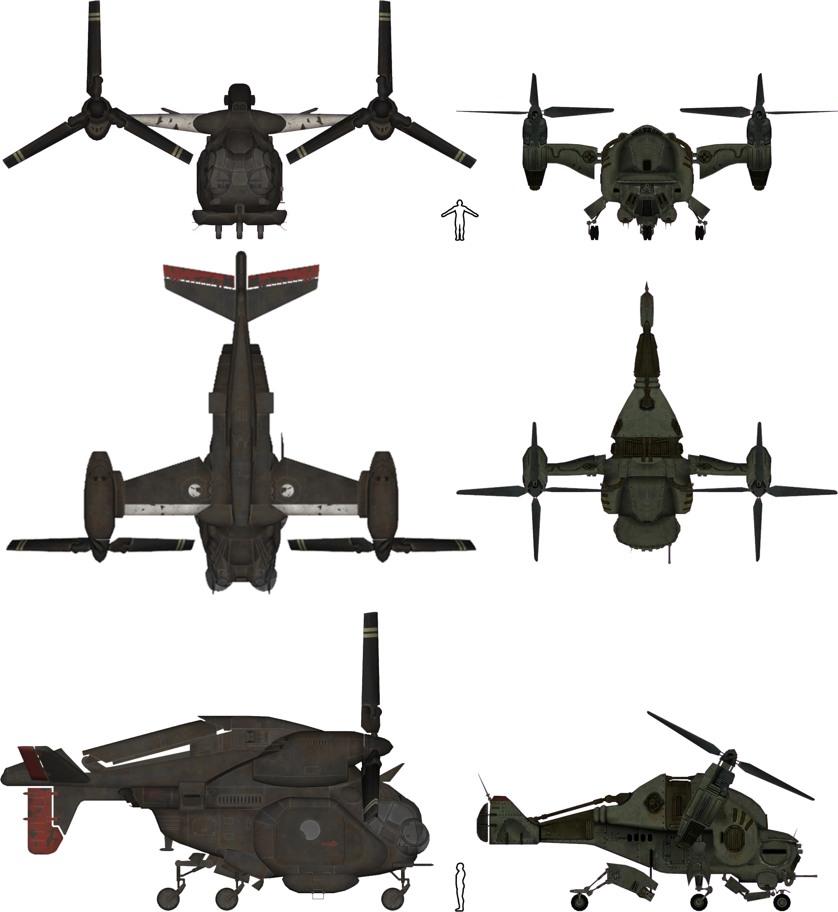
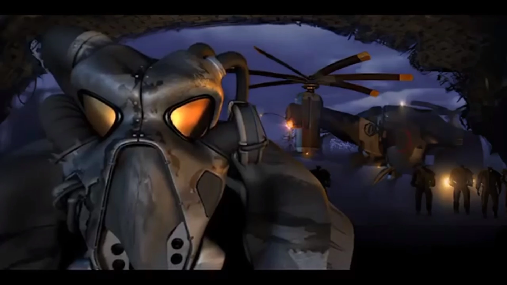
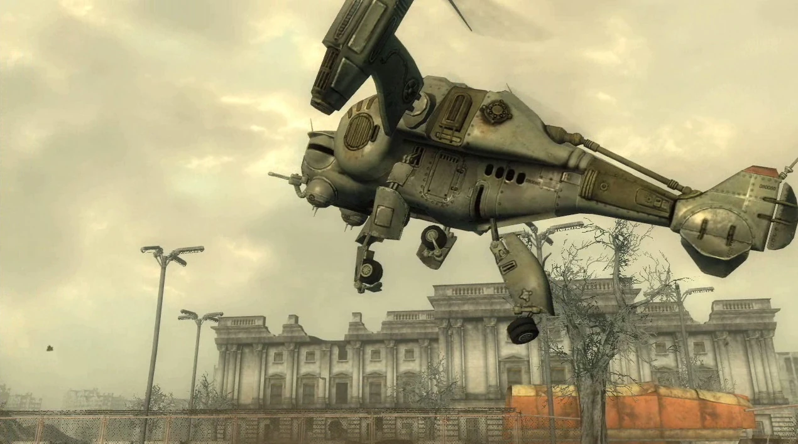
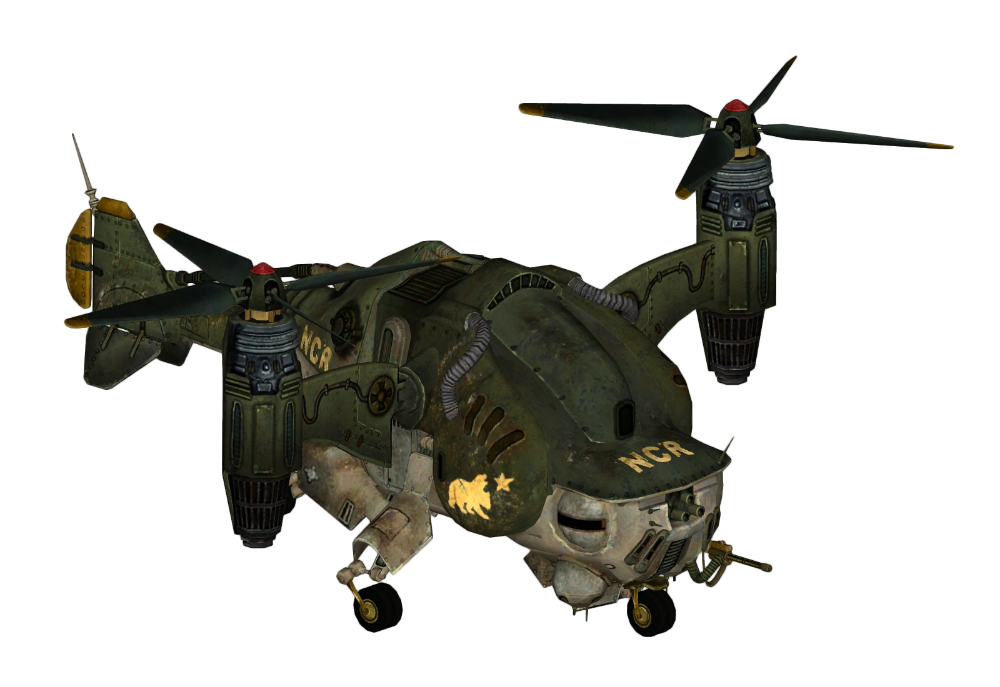
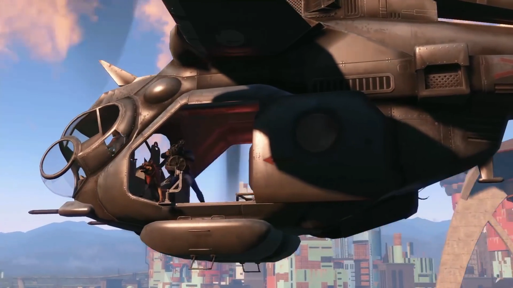
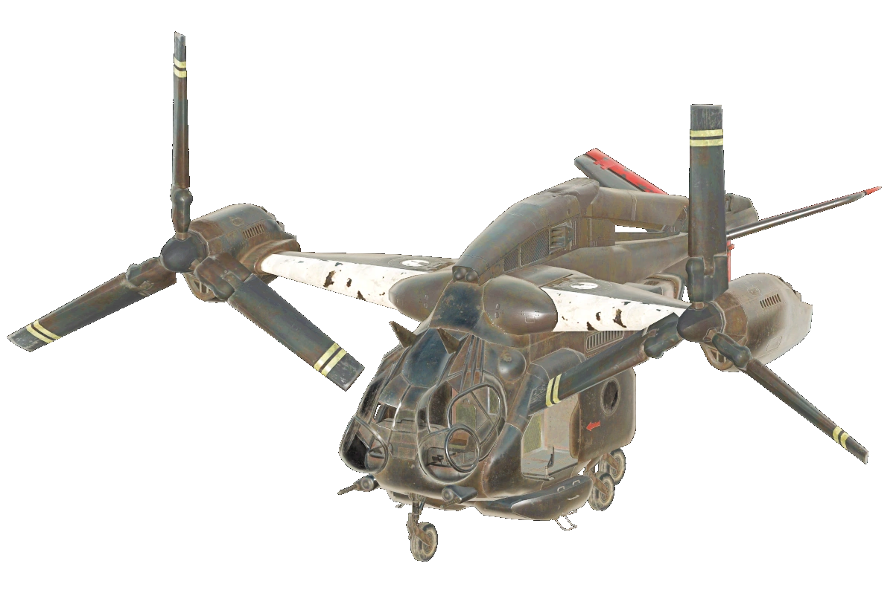
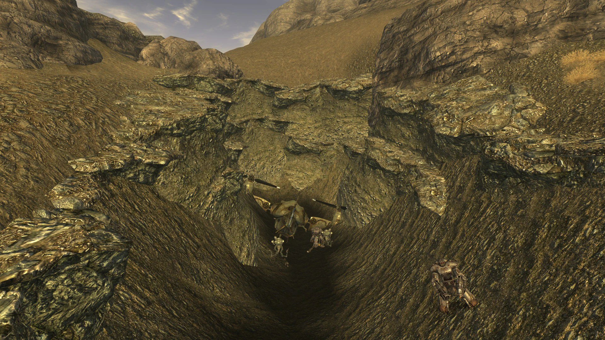
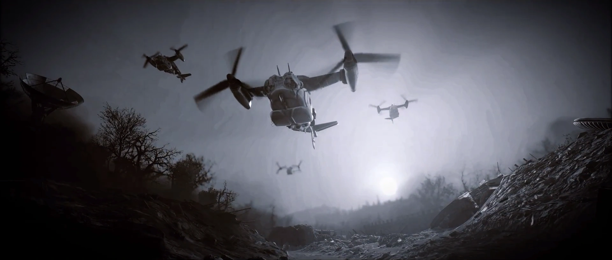

Vertibird
ベルチバード
XVB02「ベルチバード」は、極めて耐久性の高い装甲胴体を持つVTOL（垂直離着陸）機であり、多種多様な攻撃兵装と防御対抗手段を装備可能です。これはこの種の航空機としては史上最も先進的なものであり、軍は2085年までの実戦配備を目指しています。
概要
ベルチバード（Vertibird）は、垂直離着陸（VTOL）航空機シリーズの総称です。
Falloutシリーズの世界において最も象徴的な航空機であり、アメリカ合衆国軍が開発した多目的ティルトローター機です。
大戦前はプロトタイプ段階でしたが、エンクレイヴによって完成され、その後B.O.S.やNCRなど複数の勢力によって運用されてきました。
開発史
ベルチバードの開発は2072年、国防総省（Department of Defense）によって開始されました。
初代モデルは多目的ティルトローター型VTOL航空機として設計されました。
初代モデルの成功を受け、軍はほぼ全ての面で改良した上位モデルXVB02の開発に着手。
より強固な装甲、より強力な兵装、より高い速度と積載能力を目指しました。
しかし2077年の大戦勃発時、XVB02はまだプロトタイプ段階であり、正式な軍用配備は2085年に予定されていました。
限定的な試験運用は行われていたとみられ、アンカレッジ奪還作戦の最終段階では冬季仕様のベルチバードが実戦投入されています。
大戦後、エンクレイヴがコントロール・ステーション・エンクレイヴ（石油リグ）でXVB02のプロトタイプを完成させ、X-01パワーアーマーと共に量産を開始しました。

デザインとバリアント
エンクレイヴの第二世代モデル
エンクレイヴが量産した第二世代ベルチバードには、2つの明確なバリアントが存在します。
🚁 輸送型
- 大型ガラスキャノピー
- 6本の非格納式着陸脚
- 広い貨物室
- 7枚羽根ローター（追加揚力用）
- コントロール・ステーション・エンクレイヴ崩壊前に使用されていたバリアント
🔫 ガンシップ型
- 重装甲の船体
- 4枚羽根ローター × 2基
- 4本の格納式着陸脚
- 強化された武装と機動性
- エンクレイヴ残党および首都ウェイストランドのエンクレイヴが使用
大戦前の米軍モデル / B.O.S.モデル
- より大型の輸送型
- 透明コクピット
- スライド式サイドドア
- 折りたたみ翼とティルトナセル
- メインキャビン後方に2基のジェットエンジン追加
- プリドゥエンとのドッキングフック
武装
| 兵装 | 説明 |
|---|---|
| ガトリングレーザー | 機首搭載。遠距離から大ダメージ |
| ミサイルランチャー | 左右一対。重ダメージ+ノックバック |
| ミニガン | 機体左側ドアマウント。歩兵掃射用 |
| ミニ・ニューク爆弾架 | 爆撃用。重目標と陣地に対する一撃必殺 |
| 固定式機関銃 ×2 | FO4モデルの機首搭載（5mm弾） |
飛行特性
ベルチバードのVTOL飛行メカニクスにより、固定翼機並みの速度で着陸地点に接近し、ナセルを垂直に90度傾けることでホバリングモードに移行できます。
この極めて高い機動性により、ベルチバードはFallout世界における最も恐るべき空中戦力と見なされています。
しかし、双発ローターは飛行上の危険要素でもあります。
もし高度のある状態で片方のローターが機能不全に陥れば、機体はバランスを崩して横倒しになり、致命的な墜落を引き起こします。
Fallout 4ではローターを破壊すると、機体がY軸方向に回転しながら墜落する様子を見ることができます。

Fallout 2
西海岸では、エンクレイヴが本土と石油リグの間の人員・物資輸送にベルチバードを使用していました。
航続距離は少なくとも175マイル（石油リグ〜カリフォルニア間）。
クラマス、ニューレノ、Vault 13など広範囲に到達していたことが確認されています。
2241年、デイジー・ウィットマンのベルチバードがローター不良によりクラマス渓谷に墜落。
これが選ばれし者がエンクレイヴの存在を初めて知るきっかけとなりました。
2242年、選ばれし者がナバロ基地からベルチバードの設計図を盗み出し、この技術が荒れ地の各勢力に渡る可能性が開かれました。

Fallout 3
2277年、首都ウェイストランドでエンクレイヴが隠密状態を解除し、プロジェクト・ピュリティの確保に乗り出した際、大規模なベルチバード艦隊が展開されました。
これらのガンシップは純粋な軍事的能力——火力支援、爆撃、兵員輸送——に使用されました。
B.O.S.は鹵獲したベルチバード「プライド・ワン」を研究・改修し、プロジェクト・ピュリティ奪還からWho Dares Winsクエストの間に運用しました。
機体の両側にB.O.S.のロゴが追加されています。

Fallout: New Vegas
モハビ・ウェイストランドでは、墜落したベルチバードが南部で発見でき、周囲には強化型セントリーボットとミスター・ガッツィーが配置されています。
NAVARROの軍事基地がNCRに征服された後、基地に配備されていたベルチバードは全てNCRの軍用に転用されました。
そのうち1機はベア・フォース・ワンとして大統領専用輸送機に指定され、特別な緑・白・金の塗装が施されました。
キンボール大統領のフーバーダム訪問時に使用されます。
エンクレイヴ残党のバンカーにもベルチバード1機が保管されており、クーリエが残党を説得すればダムの戦いで運用されます。

Fallout 4
2287年の連邦では、アーサー・マクソン率いるB.O.S.遠征軍がプリドゥエンと共に到着し、大量のベルチバードが配備されました。
B.O.S.は重武装ガンシップと標準輸送型の2種を保有していますが、ガンシップは重要任務にのみ投入されます。
連邦で見られるベルチバードは、以前のモデルと大きく異なります。
より大型で、透明コクピット、スライドドア、5mmミニガン（左側ドアマウント）、機首固定式機関銃×2、折りたたみ翼とティルトナセルを備えています。
プリドゥエンの飛行甲板とドッキングするためのフックも搭載されています。
ガンナーズはB.O.S.のベルチバードを奪おうとしますが、操縦技術がなく墜落させてしまいます。
ミニッツメンやレールロードもB.O.S.壊滅作戦の過程で1機を鹵獲できる場合があります。
プレイヤーはベルチバード信号グレネードを投げて輸送機を呼び出し、高速移動の手段として利用できます。
搭乗中はドアマウントのミニガンを使用して戦闘することも可能です。

Fallout 76
アパラチアでは、連邦で見られるモデルと類似したベルチバードが多数確認されています。
その大半は墜落した状態で発見されますが、ワトガ市民センター上の機体は無傷で残っている数少ない例の一つです。
大戦直後、アメリカ軍はバークレー・スプリングスへの物資輸送にベルチバードを使用しました。
ホーンライト・インダストリアルはベルチバードの能力を調査し、自社の利用計画を立てていました。
アパラチアB.O.S.のヴァルデス技術員がフォート・アトラスでベルチバードの研究を行っています。
2104年、パイロットのレノックスが、ホワイトスプリング・リゾートからVault居住者をピッツバーグ（ザ・ピット）へ輸送するベルチバード便を開始しました。
自動操縦のベルチバード「バーティボット」も、特定の軍事施設やワークショップ（ウェイド空港など）の上空を巡回しています。

名前の付いたベルチバード
- 🛩️ プライド・ワン（Pride One） — B.O.S.が鹵獲・改修（Broken Steel）
- 🛩️ ベア・フォース・ワン（Bear Force One） — NCR大統領専用機（New Vegas）
- 🛩️ クレイモア（Claymore） — B.O.S.所属（Fallout 4）
- 🛩️ シミター（Scimitar） — B.O.S.所属（Fallout 4）
- 🛩️ スパサ（Spatha） — B.O.S.所属（Fallout 4）
- 🛩️ ヴォーパル（Vorpal） — B.O.S.所属（Fallout 4）
舞台裏
「ベルチバード」の名称は、1971年から1980年代初頭にかけてアメリカで販売されていたおもちゃのヘリコプタープレイセットの商標に由来しています。
Fallout 4のベルチバードについて、『The Art of Fallout 4』では「金魚とハインドヘリが出会った結果」と表現されています。
パワーアーマーを着た部隊がキャビン内で動き回れるよう、大型化する必要がありました。
Skyrimのドラゴンと同様に、Fallout 4のベルチバードはプレイヤーに向かって墜落するようプログラムされています。
登場作品
ベルチバードはFallout 2, Fallout 3, Fallout: New Vegas, Fallout 4, Fallout 76のすべてに登場します。
ギャラリー


ベルチバードは、Falloutシリーズの世界観を空から支える存在です。
Fallout 2で初めて墜落機として出会い、エンクレイヴの恐怖を知る。
Fallout 3で空を埋め尽くすガンシップの編隊に圧倒される。
New Vegasでは大統領専用機「ベア・フォース・ワン」として歴史の転換点に立ち会う。
Fallout 4では自分で呼び出して乗り込み、ミニガンを撃ちまくる。
Fallout 76では荒廃したアパラチアの至る所で墜落した残骸を見つけ、かつての文明の残滓を感じる。
シリーズを通じて「ベルチバードとの関係」が変化し続けるのが面白いです。
恐怖の対象 → 敵の力の象徴 → 自分の移動手段 → 過去の遺物。
Falloutの世界観の成熟そのものが、この一機の航空機に凝縮されています。
This article was created by translating and editing Vertibird, Vertibird (Fallout 2), Vertibird (Fallout 3), Vertibird (Fallout: New Vegas), Vertibird (Fallout 4), and Vertibird (Fallout 76) from Nukapedia: The Fallout Wiki.
Licensed under the Creative Commons Attribution-Share Alike License (CC BY-SA 3.0).
コミュニティ維持のため、寄付を受け付けております。
> COMMENTS